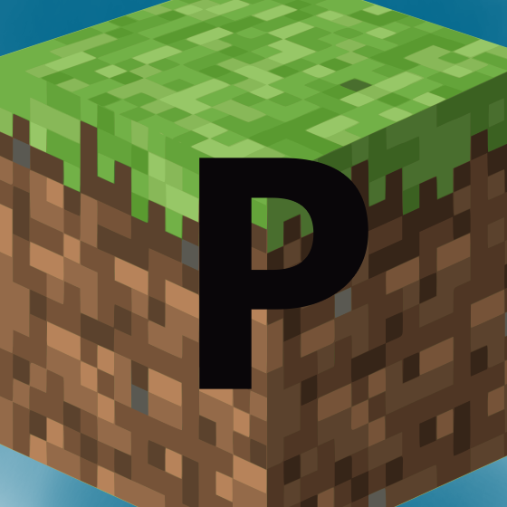

PARRISHCRAFT
Season 2 — a fresh survival world for the Parrish family & friends
mc.parrishcraft.com
Season 2 — a fresh start, established November 2026.
How to join
- Get Minecraft Java 26.3 — MultiMC, Prism, or the official launcher all work.
- Sign in with your Microsoft account — the server only accepts real accounts, so nobody can pretend to be you.
- Add the server: mc.parrishcraft.com — no port number needed.
- Ask David to whitelist your gamertag — the door is locked to strangers.
- Come build something cool. Don’t blow up each other’s houses.
Server rules
- No griefing — never break or steal from other people’s builds.
- No doxxing — keep real-life info (yours or anyone’s) out of the game.
- Fights are allowed — PvP is on! Fight fair, no hard feelings.
- No spawn killing — everyone gets to walk out of spawn safely.
- No x-ray or external cheats — play the game the way it was made.
- Replay mods are allowed; free cam is not.
Voice chat (optional)
To get voice chat, your Minecraft needs the Fabric loader and two mods:
- Install the Fabric loader for Minecraft 26.3.
- Add two mods — Fabric API and Simple Voice Chat — to your
modsfolder. Pick the 26.3 versions. - Join mc.parrishcraft.com as usual. Hold the voice-chat key (default V) to talk.
No mods? No problem — a vanilla client can still join and play everything.
World downloads
⬇ Download the Season 1 world — 4.3 GB in three parts, with step-by-step instructions on the download page.
Season 1 — the family’s original world and all its builds — still runs privately for the household. The family votes with their pickaxes.